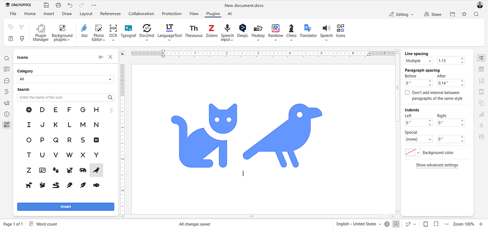

Icons
In the Document Editor, Spreadsheet Editor, Presentation Editor, and PDF Editor, you can insert and customize thousands of vector icons using the Icons plugin. The plugin is based on the Font Awesome library. Please refer to the GitHub page of the plugin to learn more.
Starting with ONLYOFFICE Docs 8.2, no plugins come with the editors by default. The plugins shall be installed via the Plugin Manager.
- Switch to the Plugins tab and choose Icons.
- Find the icon you want to insert either via the Category drop-down menu or using the Search field.
-
Select the desired icon style: Regular, Solid, or Brands.

- Select the icon and click Insert.
Customizing inserted icons
Once an icon is inserted, you can customize it using the Shape settings menu on the right-side panel:
- Change the size of the icon.
- Change the color of the icon.
- Adjust the style and shape.
- Convert the icon to a shape for further editing.